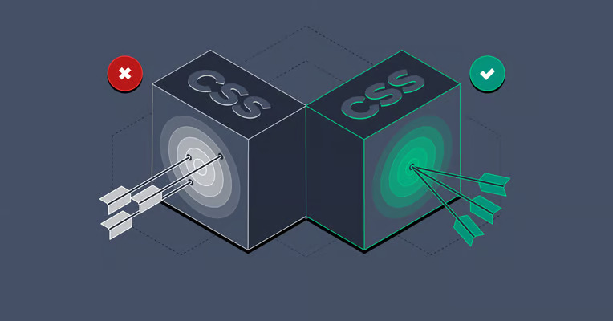

Most websites today rely on CSS to deliver more style and polish, but the sheer popularity of CSS is causing many people to take it for granted and overlook its importance. In this article, Toptal UI Developer Silvestar Bistrović explains this disconnect and outlines why you need a true CSS specialist rather than a jack of all trades.
CSS developers are web professionals whose primary responsibility is to deliver a polished and styled product to the visitor’s browser. Practically every website uses CSS, but CSS is often not considered an “equal” in the modern web development stack. Unfortunately, this misperception can lead to CSS being taken for granted, or even overlooked to some extent.
Allowing non-CSS developers to deal with CSS often results in the introduction of CSS hacks and bugs in your code, and can cause unnecessary frustration for developers. In this article, I would like to familiarize everyone with what the job encompasses so you can get a better understanding of why every site needs a reliable, professional CSS developer.
Everything that could help make your website more performant, more accessible, and provide more exposure to your audience and search engines, as well as other services and tools. The body of the HTML document shouldn’t be bloated, either. Knowing when to use semantic HTML tags, how to add required HTML attributes, and how to avoid deep nesting or divitis, should not be ignored, but rather implemented from the very start of the project. No professional developer starts following best practices halfway through the project, yet even seemingly basic things such as HTML are often done wrong.